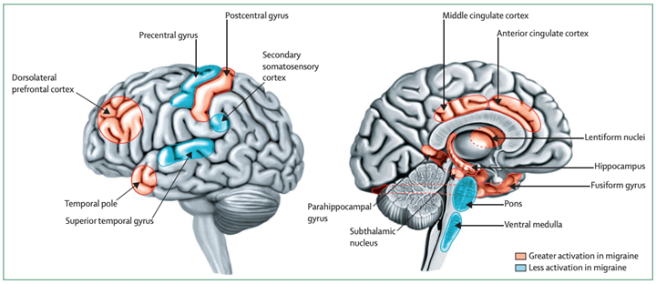
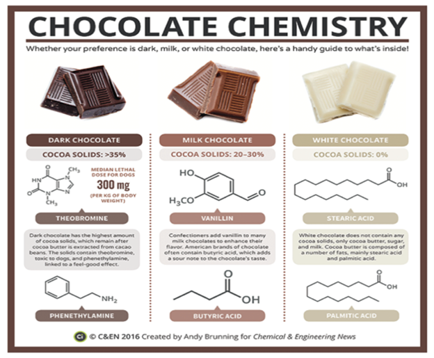
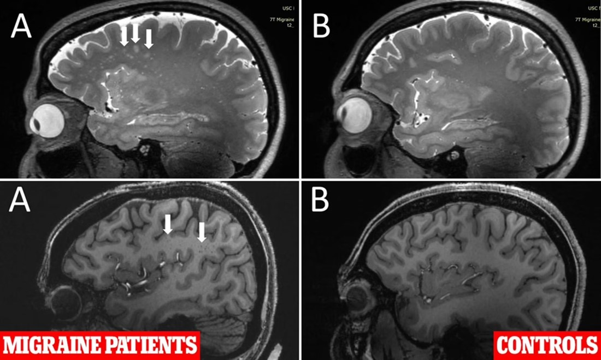
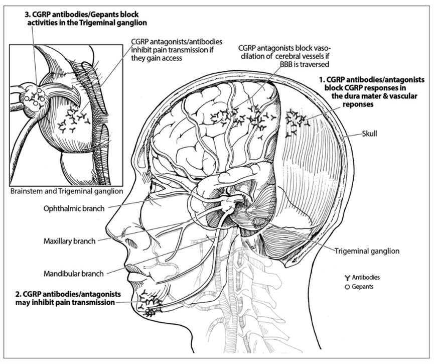

Migraines and Neurological Plasticity#
By Morgan Cronin
A Glance into the Life of a Migraineur#
Harper, 22, has been living with chronic migraines since she was 12 years old. She describes her pain as a sharp, stabbing sensation that starts behind her right eye and spreads to the rest of her head. She also experiences nausea, vomiting, sensitivity to light and sound, and sometimes aura, which are visual disturbances like flashing lights or blind spots. She says her migraines are triggered by stress, weather changes, hormonal fluctuations, and certain foods. She has tried many medications, but none of them have worked well for her. She often has to miss work, school, social events, and family gatherings because of her migraines. Harper feels isolated, depressed, and hopeless. She wishes people could understand that migraines are not mere headaches, but a serious neurological disease that affects all areas of her life.
Understanding What a Migraine is#
Migraine and headache are both common conditions that cause pain in the head, but they have different characteristics and mechanisms. Headache is a general term that refers to any pain in the head, face, or upper neck. Headaches have many causes, such as stress, infection, injury, medication, or other medical conditions. They also vary in frequency, intensity, duration, and location of the pain.
In migraine epidemiology, the key factor is prevalence (Steiner & Stovner, 2023). Migraines are characterized by recurrent episodes of moderate to severe throbbing or pulsing pain, typically on one side of the head. Sufferers are also likely to experience nausea, vomiting, photophobia, phonophobia, and aura (May & Schulte, 2016). Migraine attacks last from 4 to 72 hours and can interfere with daily activities.
Currently, migraines affect about 15% of the global population (Steiner & Stovner, 2023) and are defined as a disorder of brain plasticity with the ability to change the brain’s function and structure in response to learning, experience, injury, or disease (Lipton, 2009). Researchers identified different forms of neural plasticity associated with migraines, including central and peripheral sensitization, and pain modification alterations in the endogenous mechanisms (Filippi & Messina, 2020). These morphological brain changes and abnormal neurophysiological processing demonstrate altered neural plasticity mechanisms.
The mechanisms behind these long-term changes in brain plasticity are not fully elucidated. And several factors may be involved, such as genetic and epigenetic factors, inflammatory processes, oxidative stress, excitotoxicity, and medication overuse. These changes have clinical implications, such as increased susceptibility to migraine attacks, reduced response to treatment, and increased risk of comorbidities, such as depression, anxiety, stroke, and cognitive decline. Puledda et al. (2023) suggests these factors work through the activation and sensitization of the Trigeminovascular system, composed of the trigeminal nerve and its connections to the cerebral blood vessels and the brainstem.
The Biological Mechanisms of Migraines#
The biology of a migraine begins with the trigeminovascular system. Consisting of a network of sensory nerve fibers, the trigeminovascular system innervates the blood vessels and the meninges (the protective layers) of the brain, monitoring and regulating cerebral blood flow (Puledda et al., 2023). In response to stress and inflammation, the trigeminovascular system releases CGRP (calcitonin gene-related peptide), a neuropeptide vasodilation, inflammation, and pai (Eftekhari & Edvinsson, 2011). The release of CGRP also interacts with a number of neurotransmitters, such as glutamate, serotonin, and substance P, triggering a pain response and creating the feeling of a migraine.
 Figure 1. The brain and midline show the brain regions with different thermal pain-induced activity in migraineurs and controls. Migraineurs have more activation than controls in the red areas. Migraine sufferers have less activation in blue regions (Schwedt et al., 2015).
While the trigeminovascular system only releases CGRP in specific locations in the brain, CGRP will not always stay there. CGRP can cross the blood brain barrier, allowing it to activate broad swaths of the brain and suggesting any of the following mechanisms may be involved in creating a migraine:
Corticol spreading depression (CSD): A wave of glial and neuronal depolarization that propagates across the cortex, followed by a period of suppressed activity. CSD is thought to be the underlying mechanism of migraine aura, and it can also activate the trigeminovascular system by releasing various inflammatory mediators, including CGRP, from the cortical neurons and astrocytes. CSD increases the permeability of the blood-brain barrier, allowing CGRP and other substances to reach the brain parenchyma and modulate neuronal excitability (Theriot et al., 2012)
Trigeminovascular activation: The trigeminal nerve innervates the dura mater and the large cerebral arteries, and it can sense the changes in the vascular tone and the inflammatory milieu induced by CSD or other factors. The activation of the trigeminal nerve leads to the release of CGRP and other neuropeptides, such as substance P and neurokinin A, from the nerve endings in the dura mater and the vascular smooth muscle cells (Andreou & Edvinsson, 2019). These neuropeptides cause further vasodilation and inflammation of the meningeal vessels, resulting in increased blood flow and plasma extravasation. This process is also known as neurogenic inflammation, and it contributes to the generation and maintenance of migraine pain.
Central sensitization: The trigeminal nerve also extends to the brainstem into the trigeminal nucleus caudalis (TNC), where it forms synapses with the second-order neurons that relay the nociceptive signals to the thalamus and the cortex (Puledda et al., 2023). The TNC is modulated by various inputs from the brainstem, the hypothalamus, and the cortex, which influences the threshold and responsiveness of the trigeminal neurons. The repeated or prolonged stimulation of the trigeminal nerve by CGRP and other mediators can cause the TNC neurons to become hyperexcitable and hypersensitive, a phenomenon known as central sensitization. Central sensitization can amplify and prolong migraine pain and cause the expansion of the pain area and the development of cutaneous allodynia, the perception of pain from normally innocuous stimuli (Andreou & Edvinsson, 2019).
Interestingly, while migraines affect 12-15% of the population, women are more affected and have more intense migraines than men. Hassany et al. (2020) reported that women have three to four times higher risk of having a migraine than men. This difference is only seen after puberty, which indicates that hormones are involved in how migraines occur and change. Estrogen is a female hormone that influences migraines in women. Estrogen levels vary during the menstrual cycle, pregnancy, menopause, and hormone therapy, and these variations can start or worsen migraine episodes. These variations can change the levels CGRP, that are related to migraine mechanisms (Hassany et al., 2020). Estrogen also makes blood vessels contract, causing pulsating pain in the head, consequently, changes in the structure, function, and connectivity of the brain over time have implications for the prognosis and quality of life of migraine patients (Ashina et al., 2021).
Note
Chocolate: Migraine Friend or Foe?
Most migraine sufferers report chocolate as a trigger food (Nowaczewska et al., 2020). However, whether such a fact is true or not is questionable.
Foe: Chocolate is believed to induce migraine due to chemicals like tyramine, caffeine, and biogenic amines such as phenylethylamine (PEA). Phenylethylamine readily crosses the blood-brain barrier as a neurotransmitter and has positive or negative effects on several pathways. Unfortunately, migraine sufferers have a reduced ability to deaminate PEA. Deamination is a process that breaks down monoamines into inactive metabolites by enzymes called monoamine oxidases (MAO). Migraineurs have lower levels of MAO activity in their platelets and plasma than non-migraineurs (Littlewood et al. 1984). This means that they have higher levels of PEA that bind to the adrenergic receptors on sensory terminals and release a protein called CGRP. This stimulates the release of norepinephrine from sympathetic nerve terminals (Nowaczewska et al., 2020). It can trigger or worsen migraine attacks by causing cerebral ischemia (lack of blood flow to the brain) or rebound vasodilation (excessive blood vessels widening after constriction) To test this hypothesis, Sandler et al. (1974) administered phenethylamine (3 mg) or lactose, as a control, to individuals who experienced migraine headaches triggered by chocolate. In this trial, phenethylamine induced an intense headache in 18 out of 36 individuals. Only 6 out of 36 patients reported a headache after taking lactose.
 Figure 2. Chemical composition, structure of chocolate & ingredients (Newswise, 2023)
Friend: The beneficial effect of chocolate on migraines is a theoretical possibility that lacks support. Chocolate contains Magnesium. This mineral acts as a neuroprotective agent, preventing excessive excitation of the brain that can lead to neuronal damage and migraine headaches. Magnesium may prevent or treat migraines by several mechanisms: (1) blocking cortical spreading depression, which is a wave of electrical activity that propagates across the brain and triggers aura; (2) improving platelet function, which reduces inflammation and vasodilation of blood vessels in the brain; (3) regulating the levels of neurotransmitters, such as glutamate and substance P, that mediate pain perception; and (4) inhibiting serotonin-induced vasoconstriction, which contributes to migraine pathophysiology (Matthew et al. 2022). Further, a cocoa-enriched diet inhibits stimulated levels of the inducible form of nitric oxide synthase (iNOS) (Cady & Durham 2010). NO, a key biological regulator in migraines, regulates neurotransmission and vasodilation. NO levels rise in jugular venous plasma during a migraine attack, and iNOS inhibitors are effective in migraine treatment (Messilinger et al., 2012). Thus, it is possible that chocolate contains biologically active compounds that may reduce the occurrence of migraine attacks by inhibiting NO synthase production. However, it must be noted that beneficial outcomes are predominantly correlated with the consumption of higher cacao content.
So, should migraine sufferers stay away from chocolate? Unfortunately, the answer remains unclear. For now, most will have to depend on their sensitivity response after consuming chocolate.
Short Term and Long-Term Plasticity#
Unfortunately, recurrent migraines have detrimental effects on brain plasticity in the short and long term. In the short term, migraines can induce transient changes in brain activity, connectivity, and metabolism during the different phases of the attack. For example, Schwedt et al. (2015) revealed fMRI (functional magnetic resonance imaging) scans of different brain regions in the interictal period with altered activation intensity in migraineurs compared to controls when they experienced thermal pain-induced activation and intranasal ammonia-induced activation (Fig. 1). There are 4 phases that occur in the manifestation of a migraine. The first phase, prodrome, includes increased activity in the hypothalamus. This may be related to the regulation of homeostasis and circadian rhythms. During the second phase, aura, there is decreased activity in the occipital cortex, which may reflect the CSD phenomenon. During the headache phase, there is increased activity in the brainstem, thalamus, insula, and cingulate cortex, which may reflect the activation of the pain matrix (Puledda et al., 2023). And in the final phase, the post-drome phase, there is decreased activity in the prefrontal cortex, which may reflect cognitive impairment and fatigue (May & Schulte, 2016). These changes in brain activity are reversible and may not have lasting consequences. Whereas in long term plasticity, migraines induce persistent changes in brain structure, function, and connectivity, especially in patients with high frequency or chronic migraines. Structural magnetic resonance imaging (MRI) revealed that migraine patients have reduced cortical thickness and surface area, as well as reduced gray matter volume in frontal lobes, cerebellum, and brainstem, in the frontal, temporal, both lobes of the brain region, the cerebellum, and the brainstem (Coppola et al., 2017). Figure 3 depicts a higher prevalence for increased perivascular spaces and white matter hyperintensities in brain regions of migraine patients. These changes may reflect neuronal loss, atrophy, or pruning. Diffusion tensor imaging (DTI) studies demonstrate that migraine patients have altered white matter integrity and microstructure (Rahimi et al., 2022). These alterations reflect axonal damage, demyelination, or gliosis, and affect the communication and transmission of signals among different brain regions.
 Figure 3. Brain scans of migraine patients and controls reveal differences in perivascular spaces and white matter hyperintensities. The top panels (A and B) show the semiovale region in brains of a migraine patient (left) and a control (right). The bottom panels (A and B) show the frontal region in brains of a migraine patient and a control. Arrows in the top A panel indicate white matter hyperintensities common in migraine patients. Arrows in bottom A panel indicate enlarged perivascular spaces in migraineurs (Bates, 2023).
Migraines are also associated with alterations in the brain’s structure, function, and chemistry, particularly in regions that are implicated in the perception and modulation of pain. For example, migraines may affect the cortical thickness, surface area, and volume of some brain regions that participate in pain sensing and regulation (Tolner et al., 2019). These regions are innervated by the trigeminal nerve.
Migraines may increase sensitivity modify the patterns of brain activation in response to pain stimuli in the insula, the prefrontal cortex, the somatosensory cortex, and anterior cingulate cortex (Tolner et al., 2019). These regions constitute the “pain matrix” which is responsible for the different dimensions of pain, such as its sensory, affective, and cognitive aspects. When the connectivity of large-scale brain networks are altered, the disruption contributes to the cognitive and emotional impairments that are often reported by migraine patients. Migraines have the ability to influence the balance of chemicals in the brain, such as neurotransmitters, neuromodulators, and metabolites (Vigano et al., 2019). The subsequent changes reflect the abnormal excitability and plasticity of the brain during a migraine. However, migraines do not have to be permanent. The improvement on well-being of migraine patients begins with a clearer understanding on prevention and treatment.
Treatment of Migraines#
Pharmacological treatments should target the CGRP pathway to address the underlying causes of a migraine. By blocking the CGRP receptors or molecules (Fig. 4), CGRP antagonists and monoclonal antibodies lower the number and intensity of migraine attacks and enhance the quality of life of migraine patients (Vigano et al., 2019). To influence brain activity and connectivity, non-pharmacological interventions can use neurofeedback, transcranial direct current stimulation (tDCS), and transcranial magnetic stimulation (TMS). These methods alter the cortical excitability, plasticity, and connectivity, and may improve the pain perception and modulation, as well as the cognitive and emotional functions, of migraine patients (Dai et al., 2021). Migraine resilience can be strengthened through biofeedback, stress management, cognitive-behavioral therapy, and sleep hygiene. These strategies boost the psychological and physical well-being of migraine patients and may protect or reduce the negative impact of migraine on brain plasticity.
Newer scientific treatments have been focused on preventative measures for migraines. For example, monoclonal antibodies (mAbs) are a novel class of drugs that target CGRP or its receptors, which are involved in the pathophysiology of a migraine (Fig. 4). mAbs can prevent the initiation or propagation of migraine (Puledda et al., 2023). Four mAbs have been approved by the FDA and are administered by subcutaneous injection, either monthly or quarterly, depending on the formulation. Clinical trials showed that mAbs are effective, safe, and well-tolerated, with minimal side effects and drug interactions. This reduces the frequency and severity of migraine attacks, as well as the use of acute medications, in patients with episodic or chronic migraine (Shah et al., 2023).
 Figure 4. This picture shows how different drugs for migraines work inside the head. The drugs are CGRP antibodies, CGRP receptor antagonists, and gepants. They block a chemical called CGRP that causes pain. The drugs work at three places inside the head. (i) The trigeminal ganglion, which is a part of the nerve system. This part has cells, fibers, and blood vessels that contain CGRP. (ii) The dura mater, which is a layer of tissue that covers the brain. This part has a blood vessel that splits into smaller branches. (iii) The structures outside the brain that do not have a barrier to stop the drugs from reaching the CGRP signals. The drugs may also change the central part of the nerve system that connects to the head, but this is not a direct effect (Edvinsson, 2017).
Another preventative treatment is Cefaly, a non-invasive neuromodulation device that stimulates the supraorbital nerve, a branch of the trigeminal nerve, through a self-adhesive electrode placed on the forehead (Riederer et al., 2015) The device is worn for 20 minutes per day, either at the onset of a migraine attack (acute mode) or as a preventive measure (prevent mode). Electrical stimulation is intended to modulate the activity of the trigeminal nerve and reduce the release of CGRP and other pain mediators (Riederer et al., 2015). Cefaly is the first device of its kind to receive FDA clearance for both acute and preventive treatment of migraines. It is available by prescription only. Cefaly has been proven as a safe and effective alternative to pharmacological treatments, with no serious adverse events and high patient satisfaction (Penning & Schoenen, 2017). It can decrease the number of migraine days, the intensity of pain, and the consumption of rescue medications.
End of Chapter Summary#
This chapter explored the phenomenon of migraine through epidemiology, biology, neurology, and treatment. In the chapter a migraine is defined as a disorder of brain plasticity. Several biological mechanisms underly a migraine: the activation of the trigeminovascular system, the release of inflammatory mediators, and the involvement of cortical spreading depression. This chapter also examined the short- and long-term plasticity changes with sensory processing, pain modulation, and cognitive abilities. Finally, current treatments range from lifestyle modifications and biofeedback to noninvasive devices, such as Cefaly, or monoclonal antibodies, a new class of drugs that target specific molecules involved in migraine pathophysiology.
Chapter Quiz: Migraine Plasticity#
What is a migraine?
A. A type of headache that is caused by stress or tension
B. A type of headache that is caused by inflammation or infection
C. A type of headache that is caused by abnormal brain activity or blood flow
D. A type of headache that is caused by dehydration or hunger
What is the name of the nerve that is responsible for transmitting pain signals from the cranial blood vessels and meninges to the brainstem in migraine?
A. Vagus nerve
B. Trigeminal nerve
C. Facial nerve
D. Glossopharyngeal nerve
What is the phenomenon that may cause migraine aura, which is a wave of neuronal depolarization and hyperexcitability that travels across the surface of the brain?
A. Cortical spreading depression
B. Transcranial magnetic stimulation
C. Thalamocortical dysrhythmia
D. Neurovascular coupling
What is the name of the peptide that is elevated in migraineurs and can cause vasodilation or vasoconstriction of the cranial blood vessels through its receptors?
A. Substance P
B. Endorphin
C. Calcitonin gene-related peptide (CGRP)
D. Vasoactive intestinal peptide (VIP)
What is the name of the class of drugs that target CGRP or its receptors and are used for the preventive treatment of migraine?
A. Gepants
B. Monoclonal antibodies
C. Ditans
D. Triptans
What is the name of the non-invasive neuromodulation device that stimulates the supraorbital nerve and is used for the acute and preventive treatment of migraine?
A. Cefaly
B. GammaCore
C. SpringTMS
D. sTMS mini
What are some of the long-term effects of chronic migraine on the brain and mental health?
A. Brain scarring or changes
B. Depression and anxiety
C. Sleep disturbances and fatigue
D. Cognitive impairment and memory loss
E. All of the above
What is the term that describes the increased sensitivity to sensory stimuli, such as light, sound, or smell, in migraineurs?
A. Photophobia
B. Phonophobia
C. Osmophobia
D. Sensory susceptibility
What is the primary biological pathway underlying migraines?
A. The Trigeminovascular system
B. The corticospinal system
C. The mesolimbic system
D. The somatosensory system
True or False: Women are more prone to migraines than men.
A. True. (Explain your reasoning)
B. False. (Explain your reasoning)
Answers#
C.
B.
A.
C.
B.
A.
E.
D.
A.
A. True.
References#
Andreou, A.P. & Edvinsson, L. (2019) Mechanisms of migraine as a chronic evolutive condition. J Headache Pain 20, 117. https://doi.org/10.1186/s10194-019-1066-0.
Ashina, S., Bentivegna, E., Martelletti, P., & Eikermann-Haerter, K. (2021). Structural and Functional Brain Changes in Migraine. Pain and therapy 10(1), 211–223. https://doi.org/10.1007/s40122-021-00240-5.
Bates, C. (2023). MRI scans show migraine sufferers have ‘altered brains’. Daily Mail. https://www.dailymail.co.uk/health/article-11458713/MRI-scans-migraine-sufferers-altered-brains.html
Cady, R.J.; Durham, P.L. (2010) Cocoa-enriched diets enhance expression of phosphatases and decrease expression of inflammatory molecules in trigeminal ganglion neurons. Brain Res. 1323(18–32).
Coppola, G., Petolicchio, B., Di Renzo, A., Tinelli, E., Di Lorenzo, C., Parisi, V., et al. (2017). Cerebral gray matter volume in patients with chronic migraine: correlations with clinical features. J. Headache Pain 18:115. doi:10.1186/s10194-017-0825-z.
Dai, W., Liu, R. H., Qiu, E., Liu, Y., Chen, Z., Chen, X., Ao, R., Zhuo, M., & Yu, S. (2021). Cortical mechanisms in migraine. Molecular pain 17, 17448069211050246. https://doi.org/10.1177/17448069211050246.
Edvinsson, L. (2017), The Trigeminovascular Pathway: Role of CGRP and CGRP Receptors in Migraine. Headache: The Journal of Head and Face Pain 57: 47-55. https://doi.org/10.1111/head.13081
Eftekhari, S. & Edvinsson, L. (2011) Calcitonin gene-related peptide (CGRP) and its receptor components in human and rat spinal trigeminal nucleus and spinal cord at C1-level. BMC Neurosci 12, 112. https://doi.org/10.1186/1471-2202-12-112.
Filippi, M. and Messina, R. (2020) Chronic Migraine Brain: What Have We Learned From Neuroimaging? Front. Neurol. 10 https://doi.org/10.3389/fneur.2019.01356.
Hassany, L., Haas, J., Piccininni, M., et al. (2020) Giving Researchers a Headache- Sex and Gender Differences in Migraine. Front. Nuerol. 11 https://doi.org/10.3389/fneur.2020.549038.
Lipton, R.B. (2009) Tracing transformation: chronic migraine classification, progression, and epidemiology. Neurology. 72(5 Suppl):S3–7. doi:10.1212/WNL.0b013e3181974b19.
Littlewood, J., Glover, V., Sandler, M., et al. (1984) Low platelet monoamine oxidase activity in headache: no correlation with phenolsulphotransferase, succinate dehydrogenase, platelet preparation method or smoking. Journal of Neurology, Neurosurgery, and Psychiatry 47(338-343).
Mathew, A.A., Panonnummal, R. (2022) Cortical spreading depression: culprits and mechanisms. Exp Brain Res 240(733–749) https://doi.org/10.1007/s00221-022-06307-9.
May A., and Schulte, L.H. (2016) Chronic migraine: risk factors, mechanisms and treatment. Nat Rev Neurol. 12:455–64. doi: 10.1038/nrneurol.2016.93
Messlinger, K., Lennerz, J.K., Eberhardt, M., Fischer, M.J. (2012) CGRP and NO in the trigeminal system: Mechanisms and role in headache generation. Headache. 52(1411–1427).
Newswise. (2023). The chemistry of chocolate. Newswise. https://www.newswise.com/articles/the-chemistry-of-chocolate
Nowaczewska, M., Wiciński, M., Kaźmierczak, W., Kaźmierczak, H. (2020) To Eat or Not to eat: A Review of the Relationship between Chocolate and Migraines. Nutrients (12)608. https://doi.org/10.3390/nu12030608.
Penning, S., & Schoenen, J. (2017). A survey on migraine attack treatment with the CEFALY® device in regular users. Acta neurologica Belgica, 117(2), 547–549. https://doi.org/10.1007/s13760-017-0757-z.
Puledda, F., Silva, E.M., Suwanlaong, K. et al. (2023) Migraine: from pathophysiology to treatment. J Neurol 270, 3654–3666. https://doi.org/10.1007/s00415-023-11706-1
Rahimi, R., Dolatshahi, M., Abbasi-Feijani, F., Momtazmanesh, S., Cattarinussi, G., Aarabi, M. H., & Pini, L. (2022). Microstructural white matter alterations associated with migraine headaches: a systematic review of diffusion tensor imaging studies. Brain imaging and behavior 16(5), 2375–2401. https://doi.org/10.1007/s11682-022-00690-1.
Riederer, F., Penning, S., & Schoenen, J. (2015). Transcutaneous Supraorbital Nerve Stimulation (t-SNS) with the Cefaly® Device for Migraine Prevention: A Review of the Available Data. Pain and therapy, 4(2), 135–147. https://doi.org/10.1007/s40122-015-0039-5.
Sandler, M., Youdim, M., & Hanington, E. (1974) A phenylethylamine oxidizing defect in migraine. Nature 250(335-337).
Shah, T., et al. (2023). The role of the endocannabinoid system in chronic pain: A review of the current evidence. Calcitonin gene relating peptide inhibitors in combination for migraine treatment: A mini-review. Front. Pain Res. 4 https://doi.org/10.3389/fpain.2023.1130239.
Steiner, T. J., & Stovner, L. J. (2023). Global epidemiology of migraine and its implications for public health and health policy. Nature reviews. Neurology, 19(2), 109–117. https://doi.org/10.1038/s41582-022-00763-1.
Theriot, J., Toga, A., Prakash, N., Ju, Y., Brennan, KC (2012) Cortical Sensory Plasticity in a Model of Migraine with Aura. Journal of Neuroscience 32 (44) 15252-15261; https://doi.org/10.1523/JNEUROSCI.2092-12.2012.
Tolner, E. A., Chen, S. P., & Eikermann-Haerter, K. (2019). Current understanding of cortical structure and function in migraine. Cephalalgia: an international journal of headache 39(13), 1683–1699. https://doi.org/10.1177/0333102419840643.
Vigano, A., Toscano, M., Puledda, F., Piero., V. (2019) Treating Chronic Migraine With Neuromodulation: The Role of Neurophysiological Abnormalities and Maladaptive Plasticity. Front. Pharmacol. 10 https://doi.org/10.3389/fphar.2019.00032.